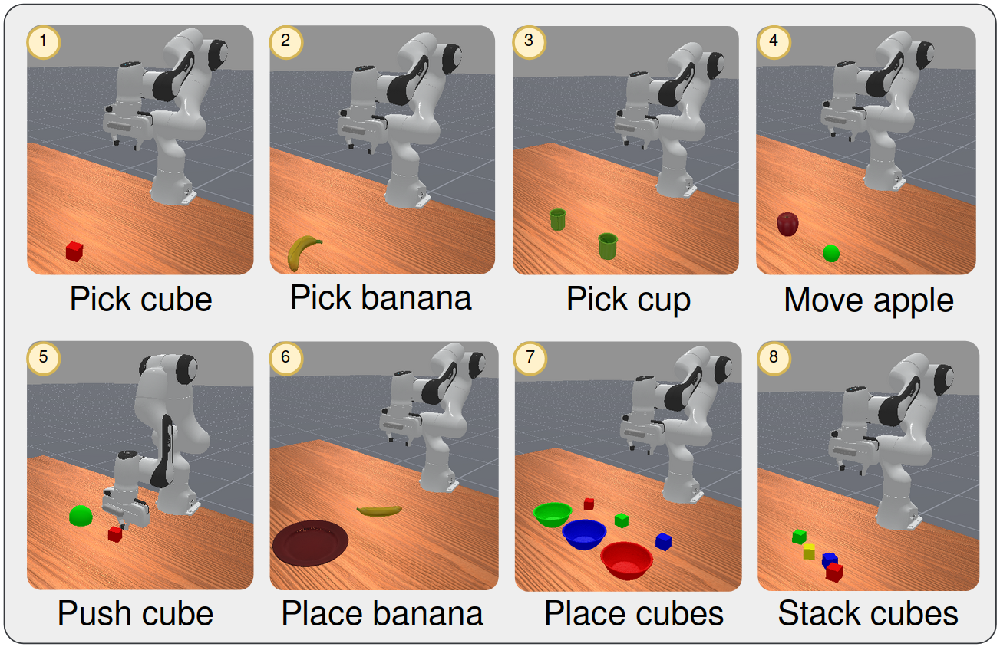
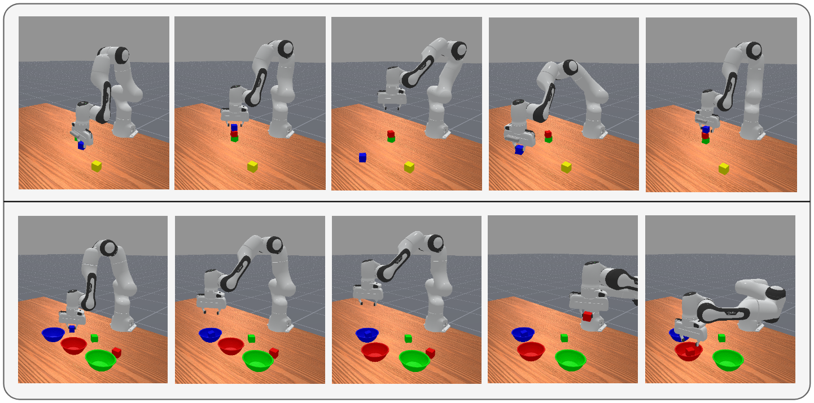
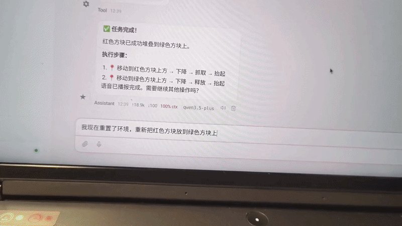

VigiClaw: Action-Triggered State Verification for Robust Long-Horizon Robotic Manipulation
1 华南理工大学自动化科学与工程学院
2 西安交通大学人工智能与机器人研究所
* 通讯作者：Yi Wang、Zhenyu Lu
研究问题
长时序机器人操作中，动作被执行并不代表目标状态已经实现。物体滑落、方块被移动或目标容器位置变化，都可能让后续动作建立在错误状态上。VigiClaw 在每个原子动作完成后检查场景状态，在发现异常时触发规则引导的重规划。
系统框架
VigiClaw 将感知、决策和执行组织为闭环。感知层使用 YOLO 实例分割与 RGB-D 信息重建对象状态；决策层通过 OpenClaw 调用预定义技能，并使用 DMP 生成动作轨迹；执行层在 ManiSkill 中执行动作，再将新的视觉状态反馈给验证模块。

关键结果
| 配置 | 方块放置（受扰动） | 方块堆叠（受扰动） |
|---|---|---|
| NVD · 无视觉检测 | 0% | 0% |
| VD · VigiClaw | 84% | 72% |
| SIM · 仿真真实坐标 | 88% | 84% |
表中结果来自论文 Table II；每种配置下，每项任务执行 25 次。NVD 不进行视觉状态检测，VD 为完整 VigiClaw，SIM 使用仿真器提供的真实对象坐标。
仿真实验
论文在 ManiSkill 中评估了 8 项桌面任务，包括抓取、移动、推动、放置与堆叠。受扰动实验针对方块放置和堆叠任务：将已经放好的方块移回桌面，或将空碗移动 0.1 米，测试系统能否检测状态偏差并恢复执行。

异常检测与恢复
对被移走的方块，VigiClaw 触发重新抓取与放置；对发生位移的碗，系统使用最新检测坐标更新目标位置。该机制在原子动作结束时触发，无需持续调用视觉语言模型进行监控。

真机测试
将 VigiClaw 框架部署到自制机械臂平台，展示自然语言指令驱动的桌面方块操作。演示包含上位机交互与机械臂执行过程，呈现从任务指令到真实动作的系统联调。

研究边界
论文中的定量成功率来自 ManiSkill 仿真实验；真机演示用于展示硬件部署与执行流程。多视角感知和更灵活的恢复策略仍是后续研究方向。